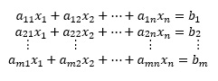

2.1.1 Función lineal, desigualdad lineal y región factible
Función lineal
Una función f(x1,x2,…,xn ) de x1,x2,…,x1n es una función lineal si y solo si para algún conjunto de constantes c1,c2,…,c1n, f(x1,x2,…,x1n )= c1 x1+c2 x2++ …+,cn xn.
Por ejemplo, f(x1,x2 )= 2x1+x2 es una función lineal de x1 y x2,
pero f(x1,x2 )=x12 x2 no es una función lineal de x1 y x2.
Es decir, una relación matemática lineal significa que todos los términos utilizados son de primer grado (es decir, no se elevan al cuadrado ni a la tercera o a una potencia mayor).
Desigualdad lineal
Definición. Para cualquier función f(x1,x2,…,xn ) y cualquier número b las desigualdades f(x1,x2,…,x1n )≤b y f(x1,x2,…,x1n )≥b son desigualdades lineales.
Por consiguiente, 2x1+3x2≤3 y 2x1+x2≥3 son desigualdades lineales,
pero x12 x2≥3 no es una desigualdad lineal.
Un sistema arbitrario de m ecuaciones lineales en n incógnitas se puede escribir como:

Elaboración propia
El primer subíndice en el coeficiente aij indica la ecuación en que aparece el coeficiente, y el segundo subíndice indica a que incógnita multiplica. Así a12está en la primera ecuación y multiplica a la incógnita x2.
Ecuación lineal
Una ecuación con n variables X1, …, Xn es lineal si puede escribirse en la forma:
a1X1 + a2X2 +…, anXn = b
Las ai son los coeficientes.
b es el término constante de la ecuación.
Las variables X1, X2… se denominan incógnitas.
Todas las variables están elevadas sólo a la primera potencia.
Nota: Una ecuación lineal no incluye ningún producto o raíz de variables. No aparecen como argumentos de funciones trigonométricas, logarítmicas o exponenciales.
Las siguientes ecuaciones no son lineales:
X +3Y2 = 7
Y – sen X =0
3X + 2Y – Z + XZ = 4
Región factible
La región factible debe satisfacer todas las condiciones especificadas por las restricciones del problema, por lo cual es la región donde todas las restricciones se cumplen. Cualquier punto localizado en la región sería una solución factible del problema. Cualquier punto fuera de la región factible representaría una solución in factible.
Solución óptima
Para un problema de maximizar la solución óptima es el punto que queda en la región factible en la cual se produce la más alta utilidad; y para un problema de minimizar es el punto que queda en la región factible en la cual se produce el costo más pequeño.